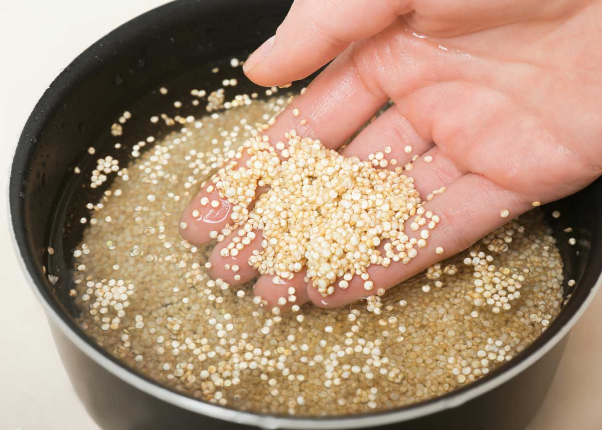
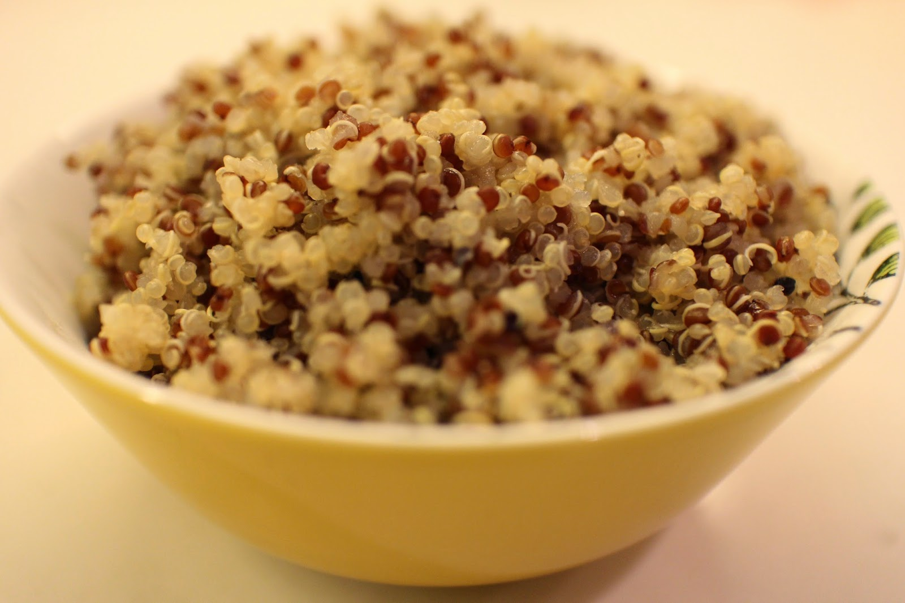
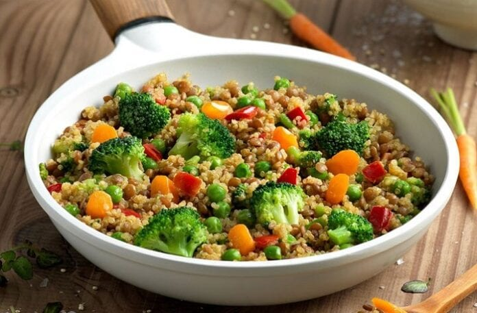
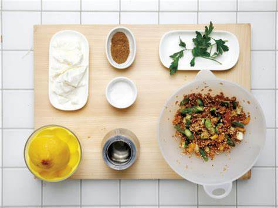
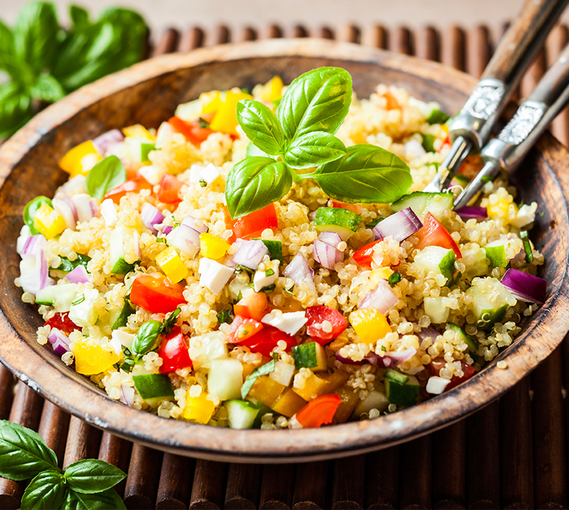

Primer Plato
Ensalada de Quinoa con Verduras
Ingredientes
- 1 taza de quinoa
- 2 tazas de agua
- 1 pepino picado
- 1 pimiento rojo picado
- 1 zanahoria rallada
- 1 aguacate picado
- Jugo de 1 limon
- 2 cucharadas de aceite de oliva VE
- Sal y pimienta al gusto
Pasos a Seguir
- Cocina la quinoa en el agua hasta que esta esté lista

- Deja enfriar la quinoa

- Mezcla todos los ingredientes en un bol grande

- Aliña al gusto con el jugo del limón, el aceite de oliva, la sal y la pimienta

- Sirve y disfruta

Macros
| Macronutriente |
Cantidad |
| Calorías |
300 kcal |
| Proteínas |
8 g |
| Carbohidratos |
45 g |
| Grasas |
12 g |
Volver al menú
Volver al inicio